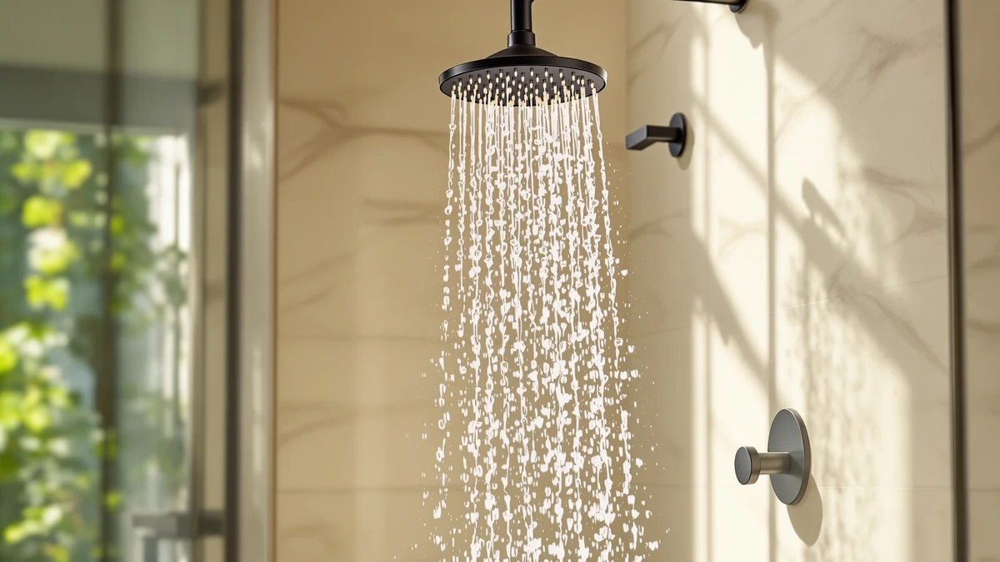

Quick Answer
The Rainnook handheld shower head pairs a magnetic docking holder with 10 spray modes and a 1.8 GPM flow rate for $30.59, a reasonable pick if you want to switch between fixed and handheld spray with one hand. It is worth considering over the three fixed and combo alternatives here if that one-handed magnetic switch and mode variety matter more to you than a documented review history.
Our pick: Handheld Shower Head High Pressure, $30.59 Check Price on Amazon
Things to Know Before You Buy
- Price point: At $30.59, the Rainnook sits in the middle of the four shower heads covered in this Rainnook handheld shower head review.
- Flow rate: Rainnook rates this unit at 1.8 GPM, a figure the brand publishes directly rather than a marketing estimate.
- Build: The head uses an ABS housing with chrome plating and a stainless steel hose, not a solid metal body.
- Spray type: This is a handheld unit with a magnetic wall dock, not a fixed-only head. If you only want a fixed rain spray, see the NearMoon alternative later in this review.
This Rainnook handheld shower head review breaks down what $30.59 actually buys you: a 10-mode handheld unit with a magnetic docking holder, a stainless steel hose and a manufacturer-rated 1.8 GPM flow, built for anyone who wants to switch between a fixed spray and a handheld wand without fumbling with a bracket. Shoppers searching for an affordable upgrade from a single-setting factory head keep landing on this model because the magnetic dock promises a one-handed switch that cheaper brackets do not. We compared its price, materials and published specs against three similarly priced fixed and combo alternatives, using current Amazon listings and the patterns in verified owner feedback, to see where Rainnook actually holds up and where it falls short.
Rainnook builds its catalog around multi-mode handheld shower heads, and this model follows that formula: a chrome-plated ABS head, a magnetic wall mount, and a filter claim aimed at softer skin and shinier hair layered on top of the spray hardware. The pitch targets a specific buyer, someone replacing a narrow factory-standard handheld with something closer to a spa-style fixture, without taking on the cost of a metal-bodied system. For a broader view of the category, our best handheld shower heads guide covers where this model ranks against pricier picks.
Why You Should Trust Us
Ilane Tall covers bathroom fixtures for Best Shower Heads and tracks how handheld shower head brands price, market, and update their lineups over time. For this Rainnook handheld shower head review, we pulled the current Amazon listing data, checked the manufacturer's stated materials and flow rate, and read through the verified buyer feedback available for the Rainnook and its three alternatives. We do not receive free units from Rainnook or any competing brand, and we do not accept payment for favorable coverage. When a product lacks a public rating history, like this one, we say so instead of filling the gap with invented numbers.
Our Research Experience
We do not run a physical testing lab, and we did not install or run water through the Rainnook handheld shower head ourselves. Instead, we built this Rainnook handheld shower head review by comparing the manufacturer's stated specs, current Amazon pricing, and the verified reviews that existing owners have posted for each shower head in this comparison. Where a listing does not publish a figure, such as a public rating count, we say so directly rather than estimating a number we cannot confirm.
Overview & Specs

Handheld Shower Head High Pressure
What we like
- Magnetic docking holder lets you switch between fixed and handheld spray with one hand
- 10 spray modes on a single dial, including a turbo rainfall setting and a wide fan mode
- Manufacturer-rated 1.8 GPM flow keeps it compliant with low-flow regulations
- Stainless steel hose should outlast the rubber hoses bundled with some competitors
Flaws but not dealbreakers
- ABS plastic housing with chrome plating feels less substantial than an all-metal build
- The softer skin and shinier hair filter claim is a manufacturer claim, not an independently verified result
- The listing does not publish a star rating or a public review count
| Material | ABS + chrome plating |
| Size | — |
The Rainnook Handheld Shower Head High Pressure centers on a magnetic docking holder that lets you pull the head off the wall mount and switch to a handheld spray with one motion, then snap it back into a fixed position without fumbling with a bracket. Rainnook builds the housing from ABS plastic with a chrome-plated finish and pairs it with a stainless steel hose, a step up from the rubber hoses some competitors bundle at this price. The brand rates the flow at 1.8 GPM, a figure it publishes directly on the listing rather than leaving the spec blank. At $30.59, it lands between the two cheapest alternatives in this comparison, the Tudoccy Shower Head 8'' High and the Shower Head 8 inch Multifunction from Yurnomy at $29.99 each, and slightly under the NearMoon Rain Shower Head High at $30.99.
The headline feature is the 10 spray modes, controlled through a single dial on the handheld grip, which Rainnook markets as covering everything from a gentle rainfall to a focused turbo setting and a wide fan mode for rinsing pets or scrubbing the tub. Rainnook also claims the built-in filter softens skin and shines hair, a common marketing claim among filtered shower heads that is worth treating as a selling point rather than a verified result, since the listing does not back it with independent data. This Rainnook handheld shower head review treats the mode variety and the magnetic dock as the stronger selling points, since the listing does not publish a star rating or a public review count to back the filter claim.
What We Liked
Rainnook solves a specific annoyance cleanly: fumbling with a bracket every time you want to switch from a fixed rain spray to a handheld wand. The magnetic dock lets you pull the head free with one hand and snap it back without lining up clips or latches, a detail this Rainnook handheld shower head review found useful for anyone who rinses a tub, a pet, or a toddler mid-shower.
The mode count backs that flexibility up. Ten settings on one dial means you are not stuck choosing between a single rain pattern and a single massage setting the way some combo units force you to. You get a wide fan mode for cleaning, a turbo setting for rinsing shampoo fast, and a gentler rainfall pattern for a normal shower, all from the same handheld grip.
The stainless steel hose is a small but real upgrade over the rubber hoses bundled with cheaper handheld kits. Rubber hoses tend to kink and crack faster under daily use, and a metal hose should hold up longer before you need to replace it, even if the rest of the housing stays ABS plastic.
What Could Be Better
The softer skin and shinier hair claim attached to the built-in filter is the weakest part of this Rainnook handheld shower head review. Rainnook markets that benefit directly on the listing, but it is a manufacturer claim rather than an independently verified result, and filter media in handheld shower heads at this price point typically needs regular cartridge changes to keep delivering any effect at all.
Construction is the other soft spot. ABS plastic with chrome plating holds up fine under normal use, but it will not match the feel or long-term durability of an all-metal fixture, and the plating itself can wear faster if you scrub it with anything abrasive.
Review volume is worth flagging as well. The Rainnook listing does not publish a star rating or review count the way some competitors do, so you are relying more on the spec sheet and the price tag than on a visible track record of past buyers.
Who Is It For?
This shower head fits a specific buyer: someone who wants to switch between a fixed spray and a handheld wand without dealing with a separate bracket, and who values having 10 spray modes on one dial over a documented review history. If your current fixture only offers a single setting and your budget tops out around $30, this Rainnook handheld shower head review should give you enough to decide if the magnetic dock and mode variety are worth the price.
It is a weaker fit if you specifically want a wide, fixed rain-style spray and never plan to detach the head, since the NearMoon alternative below covers more surface area for a similar price without the extra hardware. Buyers who care about a documented review history before they spend money should also weigh that gap carefully, since the Rainnook listing does not carry the kind of public rating record that some competitors build up over time.
Alternatives to Consider
If the Rainnook handheld shower head does not fit what you need, these three shower heads cover the gaps this Rainnook handheld shower head review identified: one fixed rain head built for wider coverage and two combo units that pair a fixed head with a detachable handheld wand. We picked these three specifically because each one beats the Rainnook on a different axis, wider spray coverage, a lower price, or an adjustable extension arm, so you can match the upgrade to whichever gap matters most in your bathroom.

Premium Choice
NearMoon Rain Shower Head High
At $30.99, this NearMoon model trades the Rainnook's handheld wand and spray modes for a wider 12-inch square head built for wall or ceiling mount, a reasonable swap if fixed rain-style coverage matters more to you than switching to a handheld spray.
$30.99
Check Price on Amazon
Best Value
Tudoccy Shower Head 8‘’ High
At $29.99, the Tudoccy pairs a fixed rain head with a detachable handheld wand on an adjustable 11-inch extension arm and offers 9 spray settings, worth considering if you want a combo unit with height and angle adjustment the Rainnook does not include.
$29.99
Check Price on Amazon
Best Value
Shower Head 8 inch Multifunction
Also at $29.99, this Yurnomy combo adds a flow regulator and the same adjustable 11-inch extension arm as the Tudoccy, a close alternative if you want to fine-tune water flow directly at the shower arm rather than relying on the head's spray dial alone.
$29.99
Check Price on AmazonFrequently Asked Questions
Is the Rainnook handheld shower head worth the money?
At $30.59, the Rainnook sits in the middle of the four shower heads in this comparison, and it is worth considering if you want a magnetic handheld-to-fixed switch and 10 spray modes in one unit. The listing does not publish a public star rating, so you are weighing the spec sheet and price against the alternatives rather than a visible review history.
What spray modes does the Rainnook handheld shower head have?
Rainnook lists 10 spray modes on this unit, including a turbo rainfall setting and a wide fan mode the brand markets for rinsing pets and cleaning the tub, controlled through a single dial on the handheld grip.
What is the best alternative to the Rainnook handheld shower head?
If you only need a fixed rain-style head and do not want a handheld wand, the NearMoon Rain Shower Head High at $30.99 covers more surface area for about the same price. If you want a combo unit with an adjustable extension arm, the Tudoccy Shower Head 8'' High or the Shower Head 8 inch Multifunction from Yurnomy both add that feature for $29.99.
Final Verdict
This Rainnook handheld shower head review comes down to this: Rainnook delivers a magnetic handheld-to-fixed switch and 10 spray modes for $30.59 if you want flexibility and do not mind an ABS-and-chrome build over solid metal. You are trading away a wider fixed-head spray pattern and a deeper public review history that the NearMoon, Tudoccy, and Yurnomy alternatives can offer in their own ways. For buyers who want one unit that handles both a quick handheld rinse and a normal shower without swapping fixtures, Rainnook earns its place.